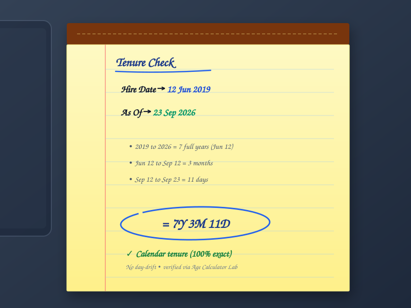

Quick answer
Employee tenure is the length of time an employee has been continuously employed with one organisation, measured from the official start date to a reference date. Split the span into completed calendar years, then whole months, then leftover days. For example, 12 June 2019 to 23 September 2026 is 7 years, 3 months and 11 days.
What employee tenure is
Employee tenure is the length of time a person has been continuously employed with a specific organisation, typically expressed in years, months and days. It is a retention measure: how long someone has stayed with their current employer.
It is not the same as total work experience. A person with two employers has one tenure at each, but a single career total across both. Tenure answers “how long here?”; experience answers “how long in total?”.
Tenure is used for service recognition, PTO tiers, workforce analytics and retirement projections. It does not by itself decide benefit eligibility — that depends on qualifying service rules, which may exclude unpaid leave or require minimum annual hours.
Which date to use
HR records carry several date labels, and they are not always the same date. Use the official start date — the first day of active service on payroll — unless a specific policy says otherwise.
| Label | Meaning | Use for tenure |
|---|---|---|
| Start date | The day employment or physical service officially begins. | The usual benchmark for tenure. |
| Hire date | The date the offer was accepted or processed. | Often identical to the start date; if different, service usually starts on the first working day. |
| Joining date | The day the employee reports for duty. | Common in multinational and Indian HR as the primary service start. |
| Employment date | General administrative date on payroll files. | Baseline when specific start logs are absent. |
| Service start date | Contractual start for a specific benefit plan. | Determines credited qualifying service for pensions or vesting. |
For formal statutory or severance calculations, the employer’s records or the applicable benefit policy decide which date is entered — not this guide.
The tenure formula
At its core, tenure is a calendar interval subtraction:
Employee tenure = Reference date − Employment start date, decomposed into completed full years, remaining whole months and remaining days.
Calendar-aware decomposition is essential because calendar years have 365 or 366 days and months have 28 to 31 days. Simple day counts cannot be turned into calendar years by division — the anniversary dates are what matter, and they belong to specific dates.
Worked example
An employee started on 12 June 2019. Tenure is evaluated on 23 September 2026.
Start date 12 June 2019, reference date 23 September 2026
Step 1 — Completed calendar years. From 12 June 2019 to 12 June 2026 = 7 completed years.
Step 2 — Remaining whole months. From 12 June 2026 to 12 September 2026 = 3 completed months (July, August, September).
Step 3 — Remaining days. From 12 September 2026 to 23 September 2026 = 11 days.
Step 4 — Cross-checks. Total elapsed days = 2,660. Total months = 87. Decimal years = 2,660 ÷ 365.2425 ≈ 7.28.
Result: 7 years, 3 months, 11 days.
A second case, for a former employee: start 3 February 2020, last service date 17 May 2024. Completed years: 3 February 2020 to 3 February 2024 is 4 years. Whole months: 3 February 2024 to 3 May 2024 is 3 months.
Days: 3 May to 17 May is 14 days. Result: 4 years, 3 months, 14 days — 1,565 elapsed days, about 4.28 decimal years.

Tenure for a former employee
For a separated employee, tenure is a locked, historical duration: official start date to the last applicable service date. Use the termination, resignation or contract end date from HR settlement records.
Note that the last physical working day can differ from the official contractual end date if accrued unused paid time off or garden leave extends the payroll termination date. The contractual end date is the one that counts for the calculation.
Tenure on a future date
Set the reference date to a future target to project tenure. Workforce planners use this to find the exact date an employee reaches 5, 10 or 20 years of service, or to test whether a retirement date satisfies a minimum service threshold.
The method is unchanged: decompose the span from the start date to the future reference date. The Years of Service Calculator does this instantly for any start and reference date.
How tenure is reported
The same span can be reported in five formats, each for a different purpose.
| Format | Example (12 June 2019 → 23 September 2026) | Used for |
|---|---|---|
| Calendar tenure | 7 years, 3 months, 11 days | Employee records and certificates |
| Completed years | 7 years | Milestone tiers and service pins |
| Total months | 87 months | Severance pay and benefit formulas |
| Decimal years | ≈ 7.28 years | Workforce regression and analytics |
| Total days | 2,660 days | Contractual day counts and probation rules |
Do not mix formats. In particular, 7.28 decimal years is not 7 years and 28 days — 0.28 of a year is about 3.3 months.
Why not divide days by 365?
Dividing total elapsed days by 365 produces a decimal, not calendar years, months and days. Months are never a static 30.416 days, leap years insert February 29, and anniversaries belong to specific dates: an employee who started on 12 June celebrates the 1st anniversary on 12 June of the following year, not on day 365.
Calendar decomposition avoids the drift. Leap years do not alter completed anniversary dates at all — the 7th anniversary of 12 June 2019 falls on 12 June 2026 regardless of the leap years in between.
Tenure vs. years of service
In everyday HR language the terms overlap, but their emphasis differs. Tenure stresses retention with one employer — how long someone has stayed. Years of service can cover cumulative time across specific employment arrangements, corporate programs, or military and civil service rosters.
Qualifying service is a third, narrower term: the formal subset of service credited for pensions, statutory gratuity or retirement eligibility under specific rules. A date calculation measures calendar duration only; it does not decide qualifying service. For the companion guide, see What Is Years of Service?.
Tenure is also not total work experience. Consider an employee with Company A from 2015 to 2019 (4 years) and Company B from 2019 to 2026 (7 years). Total career experience is about 11 years; current tenure at Company B is 7 years.
Gaps and multiple periods
An employment gap or separation usually resets continuous tenure to the rehire date. Whether past service bridges across a gap depends entirely on the employer’s written rehire policy, a collective agreement, or statutory rules such as bridging for military service or family leave.
Example: period 1 from 2017 to 2020 (3 years), a break in 2020–2021, then period 2 from 2021 to 2026 (5 years). Continuous tenure is 5 years from the 2021 rehire; total historical service is 8 years if the policy allows combining.
If periods are combined, calculate each period separately in years, months and days, then add the components, carrying excess days into months and excess months into years. Unless formal policy explicitly credits prior service, corporate databases report uninterrupted continuous service from the latest rehire date.
Leap years and February 29
Gregorian years have 365 days, or 366 in leap years. Under calendar-anniversary decomposition, leap years do not change completed anniversary dates.
Employees hired on 29 February are the exception. In non-leap years, most payroll systems recognise the anniversary on 1 March (the 366th day after the start date), while some recognition portals celebrate on 28 February. Neither convention changes completed years: on either date, the full year is locked in.
For example, a start date of 29 February 2020 reaches exactly 5 years, 0 months, 0 days on 28 February 2025 under the clamping convention.
Common mistakes
- Using today’s date for past employment. Use the official last working day, not the current date.
- Using the offer date instead of the start date. The offer signature date is not the first day of active service.
- Confusing tenure with total experience. Report duration with the current organisation, not career length.
- Ignoring employment gaps. Separated terms are not uninterrupted tenure without a bridging rule.
- Relying on total days ÷ 365. Day division drifts out of alignment at leap years and variable month lengths.
- Treating decimal years as calendar tenure. 7.28 years is about 7 years and 3.3 months, not 7 years and 28 days.
- Assuming tenure guarantees statutory benefits. Vesting and gratuity depend on qualifying service rules, not calendar tenure alone.
- Ignoring company-specific service rules. Probation, rehire clocks and merger service credits are defined by contract.
Frequently asked questions
How do I calculate employee tenure?
To calculate employee tenure, take the employee’s official start date and measure the elapsed calendar difference up to the reference date (such as today or a termination date). Decompose this interval into completed calendar years, remaining whole months, and remaining days.
What is employee tenure?
Employee tenure is the length of time an employee has been continuously employed with a specific organization, typically expressed in years, months, and days.
Is employee tenure the same as years of service?
In general HR terminology, employee tenure and years of service are largely synonymous. However, employee tenure often emphasizes continuous retention with one employer, whereas years of service can refer more broadly to service within a program or arrangement.
How do employment gaps affect tenure?
An employment gap or separation usually resets continuous tenure to the employee’s rehire date. However, company bridging policies or statutory rules may allow multiple distinct service periods to be combined into total employment history.
What if the employee started on February 29?
For employees hired on February 29 during a leap year, standard HR convention recognizes their non-leap-year anniversary on March 1 (or February 28 under some company policies). In both cases, completed full years advance on the anniversary date.
Does employee tenure determine benefits?
Not automatically. While tenure influences milestone recognition and PTO tiers, formal pension vesting, gratuity, and severance benefits depend on formal qualifying service rules, which may exclude unpaid leaves or require minimum annual hours.
Takeaways
- Tenure runs from the official start date to the reference date, in calendar years, months and days.
- Use the start date on the record — not the offer date, and not today for a former employee.
- Never divide days by 365; decompose by anniversaries instead.
- Gaps reset continuous tenure unless a bridging policy says otherwise.
- Tenure measures time; benefits depend on qualifying service rules.